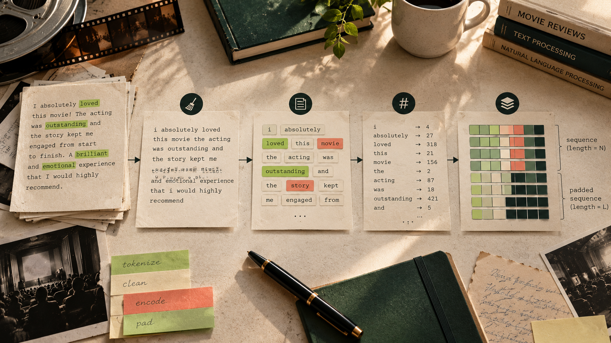

LSTM / 3,972,225 parameters
Separate memory cell
Forget, input, and output gates regulate a cell state and visible hidden state. The implementation uses one unidirectional recurrent layer.
forgetinputoutput
Research notebook / 2026
A comparative study of LSTM and GRU recurrent networks for binary sentiment classification on IMDb reviews.
*Historical full-dataset Colab benchmark; evaluation details and caveat below.
01 / The question
Given a review, the project predicts a binary label: negative (0) or positive (1). Movie reviews are a useful task because they contain long, compositional language—contrast, negation, and opinion can appear far apart.
LSTM and GRU offer different ways to carry information through a sequence. This experiment compares their accuracy, error profiles, parameter footprint, and training behavior under the same core setup.
Workflow
02 / Dataset
The source file is data/IMDB Dataset.csv. It contains 25,000 positive and 25,000 negative reviews with no missing values.
unique cleaned review–label pairs after removing 424 duplicates.
03 / Data preparation
“A beautiful film, though the ending drags.”
NORMALIZEDbeautiful film though the ending drags
TOKEN IDS[784, 52, 199, 4, 1115, 307, 0, 0, …]
Text is lowercased; HTML, URLs, digits, and non-letter characters are removed; whitespace is normalized. The vocabulary is built from training reviews only.
<PAD> = 0 and <UNK> = 1
04 / Architecture
LSTM / 3,972,225 parameters
Forget, input, and output gates regulate a cell state and visible hidden state. The implementation uses one unidirectional recurrent layer.
GRU / 3,939,201 parameters
Reset and update gates operate on one hidden state. Its recurrent layer has 25% fewer parameters: 99,072 versus 132,096.
05 / Training lab
Historical GPU runs on the 49,576-review split. Lines show recorded epoch metrics; hover or focus a point to inspect it.
Both models improve rapidly through the middle epochs. Validation loss reaches its lowest recorded point at epoch 4 for LSTM and epoch 5 for GRU; the 10-epoch exploratory run later showed rising validation loss. This is evidence of overfitting beyond the selected checkpoints, not simply high training accuracy.
06 / Evaluation
Historical Colab test evaluation on 4,958 reviews. The notebook’s archived evaluation used a raw-logit threshold of 0.5 rather than 0.0; the refactored pipeline corrects this. These results are retained as recorded, not presented as newly reproduced values.
| Metric | LSTM | GRU |
|---|---|---|
| Accuracy | 86.37% | 85.48% |
| Positive F1 | 86.06% | 84.55% |
| Negative recall | 88.91% | 91.82% |
| Positive recall | 83.84% | 79.18% |
07 / Comparison
LSTM made 676 recorded errors, versus 720 for GRU. GRU produced fewer false positives (202) but more false negatives (518), which explains its higher negative recall and lower positive recall.
On the recorded five-epoch NVIDIA T4 run, GRU trained in 34.31 seconds compared with LSTM’s 41.17 seconds. The 0.57-second figures are batched full-test evaluation times, not single-review latency.
08 / Interactive demo
This working demo uses a transparent, lexicon-based baseline in your browser—not either trained recurrent network. It offers a simple comparison point while ONNX model export remains pending.
09 / Findings
Completed: a controlled LSTM/GRU comparison with train-only vocabulary building, stratified splits, checkpoint selection by validation loss, and test-set reporting.
Limits: embeddings are learned from scratch; recurrence is unidirectional; neither baseline uses dropout or weight decay; historical metric asymmetry is affected by the threshold issue above.
Next: early stopping, regularization, pretrained embeddings, bidirectional models, richer error analysis, and an ONNX export. For accuracy-focused use here, LSTM is the recorded choice; GRU is compelling where its simpler recurrent core and faster training matter.
10 / Research project
This IMDb experiment compares LSTM and GRU classifiers using a shared cleaning pipeline, train-only vocabulary, stratified evaluation split, and checkpoint selection by validation loss.
The project documents the dataset, preprocessing, model architectures, training history, and recorded evaluation results so the experiment can be inspected and reproduced.
View source codeThe public source includes the research materials and implementation; this portfolio remains a static, browser-only presentation.